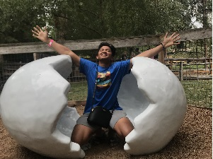

About Me

Aaron
A-A-RON
- Hello everyone! My nickname is A-a-ron (ey ey ron) from the short video Key and Peele. You can call me that too if you feel like it 😄.
- I am pursuing a degree in Software Engineering and I am loving it so far. I have studied and dabbled in several programming languages, but what
started my interest in taking Software Engineering is HTML. I still remember the first time I displayed my first ever "Hello World"
when I was in my 4th grade. At that time I just sneaked in the Senior Highschool computer labs and someone was kind enough to show and teach me.
- I just recently got engaged with my lovely fiancee Naomi💗. We plan to get married on December 17. I know its the end of the semester and its
probably snowing already, but we like the snow.
- I am currently working as a Process Support Specialist for the Student Records and Registration. I usually work with transcripts and changing student
information under the request of the student themsleves.
- The thing I love most about BYU-Idaho is that I am able to pursue my degree and become closer to Jesus Christ. I also like the resources that are available
in the campus that I'd have to pay in other schools.
- I am taking this course because it is required for me to take this course. I also am interested in learning about Web Design and growing towards full-stack developer
- I have been a member of the Church of Jesus Christ of latter-day Saints since I was born. One of my favorite quotes is from President Thomas S. Monson: "Choose your
love, Love your choice."